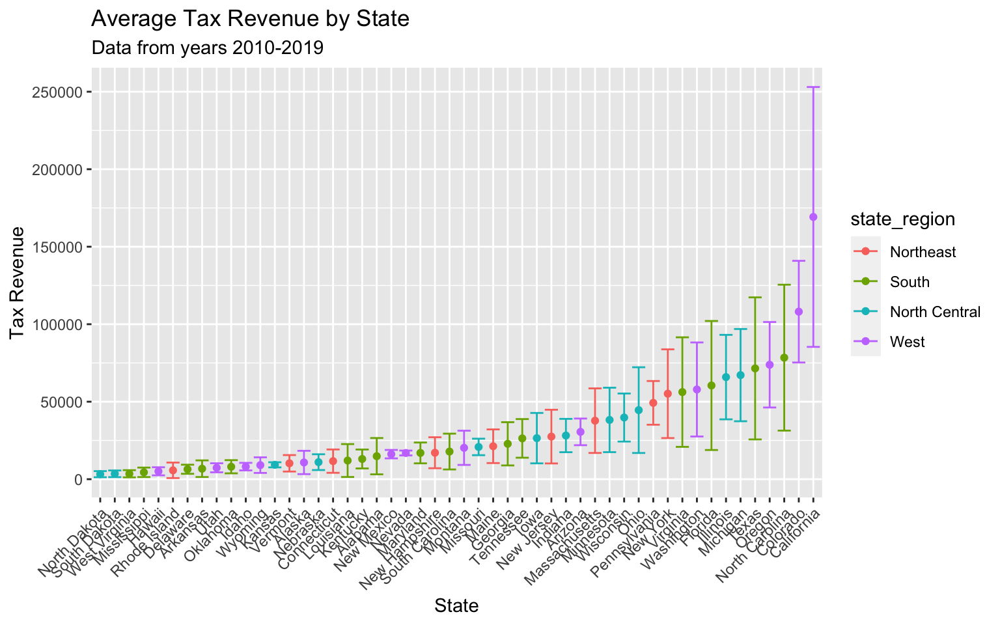
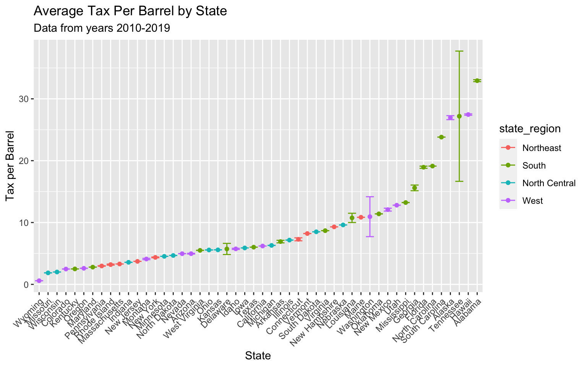

Taxation
This page concentrates on data collected from the Alcohol and Tobacco Tax and Trade Bureau and the American Beer Distributors. It goal of this page is to explore how taxation differs between states. please view the dashboard to get a better understanding of the cumulative taxation over time, a state map by year, and a view of our data.
Cumulative Tax
This graph is displaying the average cumulative tax from beer collected by each state. This tax measurement is collected by the Alcohol and Tobacco Tax and Trade Bureau and is specifically looking at taxes on beer that is consumed, sold, or removed from the premises of breweries. These points represent the average tax collected from the years 2010-2019 with a confidence interval for each state. This gives insight into how states differ from each other in total tax revenue. The colors represent the region of each state.
# setting up the regions
region = tibble(state = state.abb, state_region= state.region)
cumulative_tax = tax_df %>% # first we need to pivot the data
filter(state != "total") %>%
pivot_longer(
c(`2008`:`2019`),
names_to = "year",
values_to = "tax"
)%>%
filter(year > 2009) %>% # we want to only focus on years 2010-2019
group_by(state) %>%
summarize(
mean_tax = mean(tax, na.rm = TRUE), # finding the mean barrels
CI_lower = mean(tax, na.rm = TRUE) -
1.96 * sd(tax, na.rm = TRUE)/sqrt(length(tax)), # finding the lower CI
CI_upper = mean(tax, na.rm = TRUE) +
1.96 * sd(tax,na.rm = TRUE)/sqrt(length(tax)) # finding the upper CI
) %>%
right_join(., region, by = "state") %>% # joining the regions in so we can color the graph
mutate(
state = abbr2state(state), # making the states into names instead of abbs
state = fct_reorder(state, mean_tax) # ordering the states according to mean_barrels
)
cumulative_tax %>% # plotting!!
ggplot(aes(x = state, y = mean_tax,color=state_region)) +
geom_point() +
geom_errorbar(aes(ymin = CI_lower, ymax = CI_upper)) +
theme(axis.text.x = element_text(angle = 45, hjust = 1)) +
#theme(legend.position = "none") +
labs(
title = "Average Tax Revenue by State",
subtitle = "Data from years 2010-2019",
y = "Tax Revenue",
x = "State"
)
Cumulative Tax interpretation:
The state with the lowest amount of taxes collected in North Dakota with a mean of 3240.424 dollars. South Dakota is a close second for the lowest amount of taxes with an average of 3487.608 dollars. Both of these states are located in the North Central part of America. The state with the largest amount in cumulative taxes is California with a mean of 1.692105410^{5} dollars. It also appears that California also has the wides confidence interval. In second place in Colorado with a mean of 1.081001710^{5} dollars. These top two states are in the West part of the United States. This measurement of tax does not account for the population base or size of the state. It makes sense that California is at the top because it a state with a lot of people.
Tax per Barrel
The American Beer Distributors also collected information on taxation but they chose to measure tax per barrel unit. This helps account for the inflation we were seeing from population mass in larger states. The measurement that we are displaying is an Effective excise tax with a volume adjustment. In the dataset, there were two other similar variables about tax one adjusting for state tax and another for local laws but we chose to go with the volume adjusted measurement since they were all very similar. The below graph displays the tax per barrel in each state over the year 2010-2019. The colors represent the state region and are consistent with the key from the previous graph above.
# we had overlapping ranks, need to fix this (also there was a break where DC was)
for(i in 1:length(state_tax_df$state)) {
if(state_tax_df$state[i] == "Rhode Island") {state_tax_df$rank_3[i] = 42}
if(state_tax_df$state[i] == "Pennsylvania") {state_tax_df$rank_3[i] = 43}
if(state_tax_df$state[i] == "Oregon") {state_tax_df$rank_3[i] = 45}
if(state_tax_df$state[i] == "Kentucky") {state_tax_df$rank_3[i] = 46}
if(state_tax_df$state[i] == "Colorado") {state_tax_df$rank_3[i] = 47}
if(state_tax_df$state[i] == "Wisconsin") {state_tax_df$rank_3[i] = 48}
if(state_tax_df$state[i] == "Missouri") {state_tax_df$rank_3[i] = 49}
if(state_tax_df$state[i] == "Wyoming") {state_tax_df$rank_3[i] = 50}
}
# setting up the regions
region_name = tibble(state = state.name, state_region= state.region)
sm3 = state_tax_df %>%
filter(year > 2009) %>% # only want years 2010-2019
filter(state != "District of Columbia")%>% # we don't care about DC
left_join(., region_name) # joining the region name into the data set
static_plot<-ggplot(sm3,aes(rank_3,group=state,fill=state_region,color=state_region)) +
geom_tile(aes(y = adjusted/2,height = adjusted, width = 0.9), alpha = 0.8, color = NA) +
geom_text(aes(y = 0, label = paste(state, ' ')), vjust = 0.2, hjust = 1, size = 3) +
geom_text(aes(y = adjusted, label = paste(' $',adjusted)), hjust=0, size = 3) +
coord_flip(clip = 'off', expand = TRUE) +
scale_y_continuous(labels = scales::comma) +
scale_x_reverse() +
guides(color = FALSE, fill = FALSE) +
theme_minimal() +
theme(
plot.title=element_text(size=20, hjust=0.5, face='bold', colour='grey', vjust=-1),
plot.subtitle=element_text(size=10, hjust=0.5, face='italic', color='grey'),
plot.caption =element_text(size=1, hjust=0.5, face='italic', color='grey'),
axis.ticks.y = element_blank(),
axis.text.y = element_blank(),
plot.margin = margin(1,1,1,4, 'cm')
)
plt<-static_plot + transition_states(states = year, transition_length = 4, state_length = 1) +
ease_aes('cubic-in-out') +
labs(title = 'Tax per Barrel in Year : {closest_state}',
subtitle = 'Effective Excise Tax (Volume Adjusted)',
x = '',
y = 'Tax per Barrel')
plt #printing out the moving picture 
Tax Per Barrel Time interpretation:
We can see Tennessee starts very low in the ranking but as the years increase it climbing up the ranks ending up on top from 2014-2019 with a tax per barrel of 39.98 dollars. The lowest tax per barrel state is Wyoming. Looking for North Dakota and South Dakota on the list we see both towards the center of the list. This is interesting because in the graph above these two states had the lowest cumulative tax. Looking for California it is also in the middle of the list with a constant $6.2 taxation per barrel unit. Looking at the colors of the graph we see that the South and the West seem to be the dominant color towards the top of the list with the North Central and Northeast towards the middle and bottom of the list.
Tax per Barrel Averages
This graph also shows the effective excise tax volume adjusted measurement describe above. This time we are looking at the average tax per barrel with the corresponding confidence intervals. We concentrate our analysis on the years 2010 to 2019 and the colors still represent the state regions just like before. This can help show which states are different from each other when it comes to tax per barrel collected.
perbarrel_tax = state_tax_df %>%
filter(state != "District of Columbia") %>% # we don't want this in our moving graph
filter(year > 2009) %>%
group_by(state) %>%
mutate(
tax = adjusted
) %>%
summarize(
mean_tax = mean(tax, na.rm=TRUE),
CI_lower = mean(tax, na.rm=TRUE) - 1.96 * sd(tax, na.rm=TRUE)/sqrt(length(tax)),
CI_upper = mean(tax, na.rm=TRUE) + 1.96 * sd(tax, na.rm=TRUE)/sqrt(length(tax))
) %>%
right_join(., region_name, by = "state") %>% # joining the regions in so we can color the graph
mutate(
#state = abbr2state(state), # making the states into names instead of abbs
state = fct_reorder(state, mean_tax) # ordering the states according to mean_barrels
)
perbarrel_tax %>% # plotting!!
ggplot(aes(x = state, y = mean_tax,color=state_region)) +
geom_point() +
geom_errorbar(aes(ymin = CI_lower, ymax = CI_upper)) +
theme(axis.text.x = element_text(angle = 45, hjust = 1)) +
#theme(legend.position = "none") +
labs(
title = "Average Tax Per Barrel by State",
subtitle = "Data from years 2010-2019",
y = "Tax per Barrel",
x = "State"
)
Tax per Barrel Averages interpretation:
Wyoming has the lowest tax per barrel average of 0.59 dollars, while Alabama has the highest tax per barrel average of 32.936 dollars. The biggest ranges of values go to Tennessee with Washington and Delaware also having a range of values. These big ranges of value make sense because in the moving graph before these states had the most motion in moving ranks. The states that have no confidence intervals are the states that barely moved in the rank because their tax per barrel did not change over the years 2010-2019. Just like in the graph above we see that the South and West seem to be the dominant states in the higher tax per barrel rates with the North Central state tending to have lower tax per barrel.
A work by Amy Pitts, Ruiyang Li, Wenbo Fei, and Ziyi (Iris) Wang
Visualizations and analyses performed using R (v4.0.2) and RStudio (v1.3.1073).
© Copyright 2020 The Beer Project Team, All Rights Reserved | Powered by Github.io